総合コース
総合コースには、適性や将来の希望に応じて選択できる９つの系があります。 ２年次から各系に分かれ専門的な授業（２年次７時間/週・３年次６時間/週）で必要な知識・技術を習得します。
系別授業は週に７時間（３年次６時間）設定しています。専門の学習にじっくりと取り組むことができます。
さらに、各系ごとに「総合的な探究の時間」（２年次２時間／３年次１時間）があり、専門性を生かした様々な探究活動が行われています。
【令和７年度２年生 時間割】
| 月 | 火 | 水 | 木 | 金 | |||
|---|---|---|---|---|---|---|---|
| １ | ■…系の専門授業 | ||||||
| ２ | |||||||
| ３ | ■…総合的な探究 | ||||||
| ４ | |||||||
| ５ | |||||||
| ６ |
生徒それぞれの目標に合わせて課外講座を開講しています。 また、大規模な進路ガイダンスなど進路実現に向けて生徒のやる気を引き出す行事が充実しています。
進学課外講座［全学年対象］
中学校の復習と高等学校の基礎的な内容をしっかり定着させる講座から、大学入試に対応できる学力を養成する講座まで幅広く開講しています。学力と目標に合った講座を受講することで進路目標の達成をめざします。
就職課外講座［３年生対象］
就職希望者を対象にテキストを使用した一般常識の学習、自己発見、自己理解、履歴書対策、面接対策など充実した内容の課外講座を実施しています。
学力増進課外講座［１年生対象］
e-ラーニング教材『すらら』を活用し、個々の実力に合わせた繰り返し学習をすることで、基礎学力の定着をはかります。小・中学校の学び直しもできるので安心です。
情報課外講座［全コース・全学年生対象］
日本情報処理検定協会主催の各種検定を受験する生徒を対象とした講座です。検定試験前の短期間に集中して実施し、合格をめざします。
進路ガイダンス［全コース・全学年対象］
進路意識を高めるために１年次から進路ガイダンスを行っています。１年次は「職業観」、２年次は「学びのジャンル」、３年次は「進路選択」に合わせた講座をそれぞれ選択します。
進路実現のために必要とされる検定や資格。 それらの習得をサポートする対策講座もあり、多くの生徒が積極的にチャレンジしています。 また、授業の中で検定・資格に挑戦できる系もあります。
共通して挑戦できる検定
● 実用英語技能検定
● 実用数学技能検定
● 日本漢字能力検定
● パソコン検定 他
総合コーストップへ
入試科目に焦点をあて、進学をめざす。
他の系に比べて、国語、地歴、理科、英語の授業時間数が多く、幅広い進路実現が可能です。 大学や専門学校への進学をめざして、入試に必要な科目の基礎力の定着に力を入れています。 特に「古典探究」「日本史探究」「生物」の授業はこの系のみの実施となっており、他の系よりも深く学べます。
|
古典探究 様々な種類の古文・漢文作品にふれ、日本の言語文化の歩みを学び、豊かな教養を身につけます。 |
日本史探究 日本の文化と伝統の特色についての認識を深め、国際社会で主体的に生きる日本人としての資質を養います。 |
|
生物 代謝(呼吸･光合成)・バイオテクノロジー・動物の反応と行動・植物の環境応答について学習し、生物現象に関する興味・関心を高めます。 |
英語課題研究 ２年次に語彙・英文法を中心に学習し、基本的な英文法を学びます。３年次には読解力を育成し英語での受信力を高めます。 |
テーマは「様々なことに関心を持ち、自ら問を立てて探究する」こと。
問を立てて、研究したことをまとめ、発表していきます。
まとめ方や発表の仕方などについても学び、プレゼンテーションの力も養っていきます。
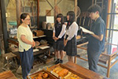
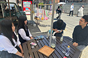
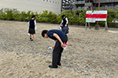
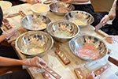
大学
関西学院大学 駒澤大学 専修大学 近畿大学 甲南大学 広島修道大学 松山大学
関西外国語大学 京都外国語大学 神奈川大学 拓殖大学 実践女子大学 神戸学院大学
桃山学院大学 甲南女子大学 川崎医療福祉大学 大阪商業大学 環太平洋大学
吉備国際大学 岡山理科大学 四国学院大学 徳島文理大学
短期大学 倉敷市立短期大学 高松短期大学 香川短期大学
総合コーストップへ
福祉の基礎を学び、福祉に対する理解と関心を深める。
福祉の専門職として働くための知識・技術を身につけます。
|
生活支援技術 適切な介護技術を用いて、安全に援助できる知識や基本的な生活支援技術を学びます。 |
社会福祉基礎 社会福祉の概念や歴史、社会保障制度など、福祉制度の基礎知識を幅広く学びます。 |
|
介護福祉基礎 介護の意義を理解し、介護を必要とする人の尊厳の保持や自立支援の考え方を学び、適切な介護の実践に生かします。 |
今後ますます必要とされる介護の技術も、福祉センターなどに出向き疑似体験や実習を通して学んでいきます。
|
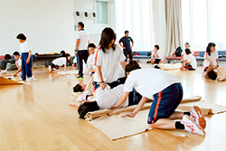 |
赤十字講演会 日本赤十字社の協力のもと、夏期休業中に健康生活支援講習支援員養成講習と救急法基礎講習を行います。 講習を受けることで資格を取得できます。 |
|
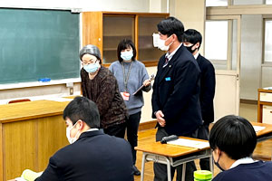 |
認知症サポーター養成講座 認知症キャラバン・メイトを講師に迎え、認知症に関する基礎知識、認知症の人やその家族への対応の仕方等を学びます。 |
|
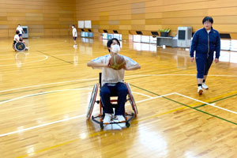 |
福祉車両体験 生活支援技術の授業で、学校にある福祉車両を使って車いすでの乗降体験をしています。 |
|
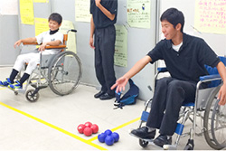 |
レクリエーション実習 デイサービスを訪問し、レクリエーション実習を行なっています。 |
|
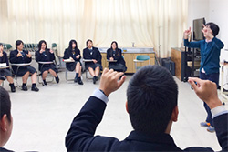 |
手話 手話通訳士を講師に招き、福祉の現場の話を聞いたり、手話の基本を教わったりします。 |
|
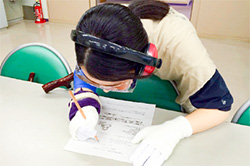 |
高齢者疑似体験・視覚障害者擬似体験 香川県社会福祉総合センターに出向き、高齢者疑似体験と視覚障害擬似体験をします。 |
大学
兵庫大学（生涯福祉学部） 四国学院大学（社会福祉学部） 川崎医療福祉大学（医療福祉学部）
専門学校
穴吹リハビリテーションカレッジ（作業療法学科）
穴吹医療大学校（看護学科）
穴吹パティシエ福祉カレッジ（介護福祉学科）
四国医療専門学校（柔道整復学科）
四国医療福祉専門学校（介護福祉学科/社会福祉学科）
総合コーストップへ
「好き」を生かして、こどもたちを笑顔に。
将来保育士を目指している人や初等教育に興味を持っている人が、基礎的な知識や技術を身につけられるようにカリキュラムを組んでいます。
|
保育実践 音楽・リズム・造形・言語などの表現方法を発達させる「遊び」について学びます。 |
保育基礎 子どもの心身の発達や生活全般について学習します。 |
|
保育課題研究 実践を通して、保育士になったときに必要な諸活動や行事の組み立て方などを学びます。 |
小児保健 乳幼児がかかりやすい病気と、その看病や予防の方法などを学習します。 |
|
演習（保育） ピアノを基礎から学びます。３年次にはコールユーブンゲン等のソルフェージュも学習します。 |
保育検定に挑戦することで保育士の仕事を知り、職業意識を高めていきます。検定合格を目指し、将来、保育および児童福祉関係の仕事に従事できる能力・資質や実践的な態度を育てます。
● 音楽・リズム表現技術
● 造形表現技術
● 言語表現技術
● 家庭看護技術
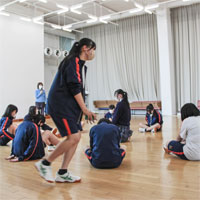
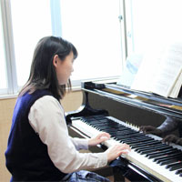
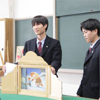
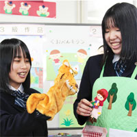
大学
環太平洋大学 京都ノートルダム女子大学 東京家政学院大学
吉備国際大学 高松大学 徳島文理大学 くらしき作陽大学
短期大学・専門学校
高松短期大学 香川短期大学 比治山大学短期大学部 芦屋学園短期大学
大阪国際大学短期大学部 神戸女子短期大学 夙川学院短期大 大阪こども専門学校
四国医療福祉専門学校 穴吹パティシエ福祉カレッジ
総合コーストップへ
食品・栄養の基礎を身につけ、健康を管理できる人材へ。
食物調理系の目標は、食に関する知識・技術を身につけ、日常食の管理ができる人になってもらうことです。 バランスの良い食事を手際よく調えるためには、食品や栄養についての知識という土台に、調理技術を生かすことが必要です。
|
食文化 日本と中国を中心としたアジアや、ヨーロッパ文化圏について学びます。 |
フードデザイン 食品の栄養的特徴や調理性、テーブルコーディネイトについての知識を学習します。 |
|
調理 調理することで、食の知識や技術の向上を目指します。 |
食物課題研究 献立作成について学び、各自が作成した献立に基づいて調理します。 |
|
栄養 栄養素に関する知識を深め、年齢別や妊婦などに適した食生活を考えます。 |
12台の調理台と大型オーブンを完備。本格的な調理実習に対応できます。
|
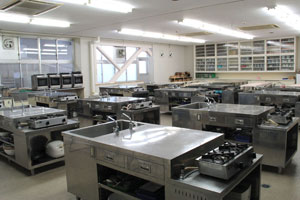 |
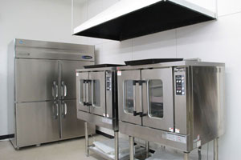 |
|
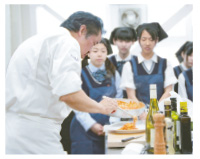 |
県内外の専門学校から、第一線で活躍されるプロの講師をお招きし、特別実習を行っています。 これまでの実施校辻調理師専門学校 キッス調理技術専門学校 ほか |
本校は、日本最大の“食”の教育機関、「辻調グループ」と教育連携を結んでいます。
検定に挑戦することで、学習した知識と技術の到達度を確認できます。
■４級 調理の基礎
■３級 調理手法の基礎
■２級 日常食
大学 くらしき作陽大学 大阪青山大学 大阪国際大学 羽衣国際大学 岡山学院大学
短期大学・専門学校
香川短期大学 四国大学短期大学部 辻調理師専門学校 京都調理師専門学校
エコール辻大阪 西日本調理製菓専門学校 キッス調理技術専門学校
穴吹パティシエ福祉カレッジ 神戸国際調理製菓専門学校 兵庫栄養調理製菓専門学校
福岡キャリナリー製菓調理専門学校 大阪キャリナリー製菓調理専門学校
ＡＳＴ関西健康・製菓専門学校
総合コーストップへ
個性豊かに音楽性を磨き、自分らしい表現を追求しよう。
|
器 楽 生徒の特性に合わせ、ピアノ演奏における基礎テクニックを学びます。 |
ソルフェージュ 演奏表現に欠かせないリズム・聴音・視唱・記譜など基礎を総合的に学びます。 |
|
演奏研究 学んだ知識や技術を総合的に高め、豊かな表現力を養っていきます。 |
音楽理論 基礎的な知識からコード理論などのポピュラー音楽理論までを学びます。 |
|
鑑賞研究 様々なジャンルの音楽作品の歴史や背景、特徴、様式などの理解を深め、演奏表現の幅を広げます。 |
|
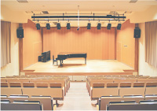 |
音楽ホール 質の高い音響効果を持つ音楽ホール。座席数１００席、広く大きなステージを備えており、合唱コンクールなどのイベントにも使用しています。 |
|
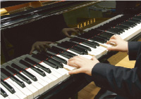 |
フルコンサートグランドピアノ 音楽ホールにはヤマハ社のＣＦⅢを完備しています。教員・生徒の研究発表において、音楽ホールの持つ響きと合わせ、ダイナミックに充実した音色を奏でることができます。 |
|
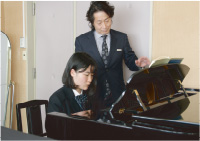 |
レッスン室（全１０室） ピアノを２台完備したレッスン室もあり、広く落ち着いた環境で個人レッスンを受けることができます。放課後の練習の場としても活用しています。 |
大学
東京藝術大学 昭和音楽大学 くらしき作陽大学 四国大学
京都芸術大学 大阪芸術大学 東京音楽大学 洗足学園音楽大学
短期大学 大分県立芸術文化短期大学 大垣女子短期大学
専門学校 東京スクールオブミュージック 尚美ミュージックカレッジ ＥＰＳエンタテインメント
総合コーストップへ
作品制作を通して人間力を高める。
美術やデザインは人々の生活を便利に、そして心を豊かにするものです。 美術デザイン系では「考える」「つくる」「伝える」という３つの工程を大切しています。 作品の制作を通して、発想力・技術力・伝達力を鍛え、人間力を高めます。
２年次 基礎表現を幅広く学ぶ
|
絵 画 水彩画の基本的な技術や知識を習得します。２学期からは油彩画も選択できます。 |
ビジュアルデザイン アクリルガッシュで色彩構成やポスターの制作などをし、デザインを基礎から学びます。 |
|
素 描 鉛筆による静物デッサンや木炭での石膏デザインを通し、美術表現の基礎力を鍛えます。 |
彫 刻 紙・針金・粘土・石膏・木など、彫刻で扱われる諸材料について広く学習します。 |
３年次 専門的表現を学ぶ
|
専攻実技 油彩・水彩・彫刻・デザインのいずれかを専攻し、本格的に制作に取り組みます。１学期は専攻ごとの共通課題を制作し、２学期からは卒業制作として個々のテーマで大作に挑みます。 |
演習（美術） 「Illustrator」「Photoshop」の基礎的な技術を習得します。 |
| 2015年 東京藝術大学 |
１名 |
2016年・2018年・2020年 武蔵野美術大学 |
３名 |
| 2019年 2名・2020年 3名・2023年 2名・2025年 2名 多摩美術大学 |
９名 |
2016年・2023年 沖縄県立芸術大学 |
２名 |
| 2018年 秋田公立美術大学 |
１名 |
2018年 尾道市立大学 |
１名 |
| 2025年 2名・2026年 1名 女子美術大学 |
３名 |
2022年 東京造形大学 |
１名 |
| 2015年1名・2017年1名・2018年2名・2019年5名・2020年2名・2021年5名・2023年3名 嵯峨美術大学 |
１９名 |
美術大学入試では実技試験が課せられます。そこで必要となるデッサンの力を養うため、全学年希望者を対象に土曜課外講座（４時間／月１回）を開講しています。未経験者でも練習を重ねることで必ず上達します。国公立大学や有力私立大学合格も夢ではありません。
国公立大学 東京藝術大学 沖縄県立芸術大学 秋田公立美術大学 尾道市立大学
私立大学
武蔵野美術大学 多摩美術大学 東京造形大学 東京工芸大学 東京工科大学
デジタルハリウッド大学 嵯峨美術大学 京都精華大学 京都芸術大学
大阪芸術大学 神戸芸術工科大学 川崎医療福祉大学 倉敷芸術科学大学 尚美学園大学
短期大学
大分県立芸術文化短期大学 女子美術大学短期大学部 大垣女子短期大学 嵯峨美術短期大学
大阪芸術大学短期大学部 奈良芸術短期大学 香川短期大学 九州産業大学造形短期大学部
短期大学・専門学校
東京ビジュアルアーツ 穴吹デザインカレッジ 香川県歯科医療専門学校
香川県漆芸研究所 代々木アニメーション学院
総合コーストップへ
スポーツを学問として学び、将来に役立てる。
「競技スポーツ」「生涯スポーツ」など、多くの人たちが関わるスポーツをテーマにし、基礎的な実技や理論を専門的に学びます。
スチューデントトレーナー認定試験（初級）が受けられる授業を行います。
※メディカル・フィットネス協会認定「スチューデントトレーナー」は、トレーニング指導からスポーツ医学・スポーツ栄養学・アスレティックリハビリテーションまで、スポーツトレーナーとしての専門的な知識・技術を身につけた指導者に与えられる資格です。
|
トレーニング理論と実際Ⅰ スポーツの外傷について学び、スポーツ傷病者に対する応急処置、テーピング等の実習を行います。 |
スポーツ栄養学・解剖生理学 栄養学の基礎から“スポーツ選手の食事”を学びます。また、下肢や上肢・肩・体幹の骨格系・筋肉系について学びます。 |
|
実習及び演習Ⅰ 各競技種目の特性や練習方法、指導者（トレーナー・教師）疑似体験などの実習を通じて、その資質・指導力を学びます。 |
３年次
|
トレーニング理論と実際Ⅱ 筋力トレーニングや、身体各部位のトレーニングのための実技の方法をさらに深めて学びます。 |
体力測定と評価 データの収集や評価、統計について学びます。 |
|
実習及び演習Ⅱ 実技を通じて身体各部位のトレーニングについて学びます。さらに、指導者としての能力の向上をめざします。 |
授業の多くはスポーツセンターを有する国分寺学舎で行います。
本格的な施設・設備を最大限活用し、幅広くスポーツを学ぶことができます。
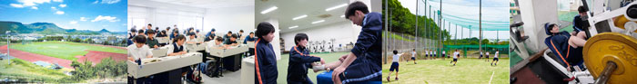
進学
鹿屋体育大学 関西大学 関西学院大学 日本大学 日本体育大学 大阪体育大学
日本女子体育大学 東京女子体育大学 神戸親和女子大学 吉備国際大学 東京国際大学
金沢学院大学 太成学院大学 環太平洋大学 四国学院大学 九州共立大学
履正社医療スポーツ専門学校 大阪社体スポーツ専門学校 四国医療専門学校
就職 香川県警察 自衛隊 刑務官 カーブス (株)レオマユニティー
総合コーストップへ
ビジネス知識や技術を身につけ、社会のニーズに応える人材に。
ビジネスの諸活動に必要な知識や技術を身につけ、就職や商業・情報系への進学の準備をします。
|
簿記 会計記帳や財務諸表など、企業における簿記の基本的な仕組みを学習します。ビジネスの諸活動を計数的に把握する能力と態度を身につけます。 |
情報処理 パソコンに関する知識と技術を習得すると同時に、情報の持つ意義や役割を学びます。 |
|
ビジネス基礎 ビジネスに関する基礎的な知識を習得し、経済社会の一員としての諸活動や望ましい心構えを学びます。 |
課題研究 身近なビジネス問題に対するケーススタディを通して、自ら学び・考え・判断する能力を身につけます。 |
課題研究の授業では、２年次に学んだ「簿記」「情報処理」の内容をより深く学び、実社会を想定した各種課題に取り組みます。 ２年間を通し「自ら学び、考え、判断する能力」を身につけ、上位級への合格に向けて取り組みます。
全国商業高等学校協会主催
■ 簿記実務検定 ■ ビジネス文書実務検定
■ 情報処理検定 ■ 珠算・電卓実務検定
※上記以外の商業系各種検定(会計実務検定・ビジネスコミュニケーション検定・商業経済検定など)、英語検定も受験できます。
進学
関西大学 摂南大学 松山大学 甲南大学 神奈川大学 神戸学院大学 桃山学院大学
流通経済大学 香川短期大学 高松短期大学 穴吹カレッジグループ 四国総合ビジネス専門学校
就職
(株)タダノ (株)ＪＲ四国ホテルズ (株)高松三越 (株)宮脇書店
(株)ジャパンスイミングスクール (株)エディオン 四国旅客鉄道(株)
総合コーストップへ
観光を学び、語学の幅と視野を広げる。
|
観光中国語Ⅰ・Ⅱ ネイティブの講師を招き、挨拶や自己紹介などの日常会話を通して、基礎から中国語の学習をします。 |
観光英語Ⅰ・Ⅱ 会話表現を中心に授業が進められます。「おもてなし英語」についても学習します。 |
|
観光基礎Ⅰ・Ⅱ 海外や日本各地の観光資源について学習します。２年次にはビジネスマナーについても学びます。 |
検定に挑戦することで、学習した知識と技術の到達度を確認できます。
|
ＨＳＫ中国語標準検定（漢語水平考試）
１級（初級）や２級（※１級の上位レベル）の合格を目指します。
授業でも受験対策を行い、３年次に受験します。
１級の合格率は例年９０％〜１００％です。 *HSK中国語標準検定は、中国政府公認で世界基準の中国語検定です。 |
| ビジネスマナー検定（全国検定教育振興会） 社会で必要となるビジネスマナー能力を身につけるため、２年次にビジネスマナー検定を受験します。 ３級の合格率は例年８０％～１００％です。 |
進学
桜美林大学 実践女子大学 京都外国語大学 大阪経済法科大学 大阪商業大学 阪南大学 神戸学院大学
武庫川女子大学 吉備国際大学 岡山商科大学 就実大学 川崎医療福祉大学 四国学院大学 高松大学
高松短期大学 せとうち観光専門職短期大学
ＥＣＣ国際外語専門学校 穴吹カレッジグループ 河原学園グループ
就職
四国旅客鉄道（株） （株）レオマユニティー
（株）喜代美山荘 花樹海 徳島県警察
総合コーストップへ